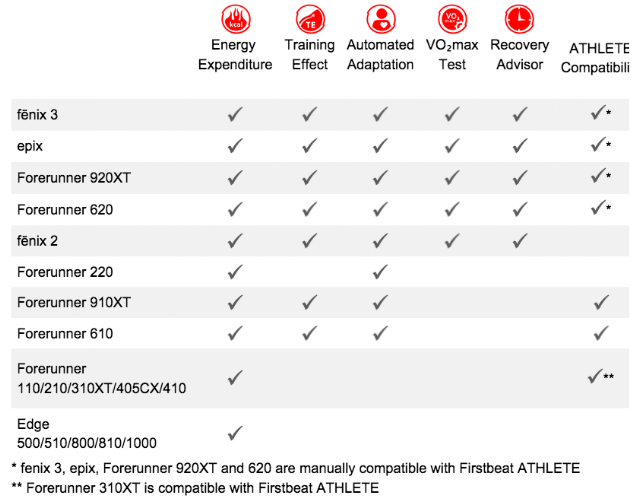

怎知當次的「訓練效果」(Training Effect)如何呢？
剛拿到Garmin的錶時，就開始鑽研裡頭各種數據，其中有一樣「訓練效果」(Training Effect，以下簡稱TE)是我最疑惑的。這到底是怎麼定義出來的？
別人問我時，我都說參考就好，但每次這樣回答的同時也證明了我的無知，當我看到曾得過七次山徑跑世界冠軍的傳奇人物Jonathan Wyatt說：「我真的很看重『TE』這個分析數據。它不但即時告訴我當前訓練的費力程度，也為我的訓練情況提供了很棒的資訊。這就是科學化訓練該有的樣貌啊！」我才有股動力要把它的來龍去脈給搞清楚。
問了Jason之後才知道Garmin的許多分析數據的演算法都是由Firstbeat這家公司所提供，包括：
- 消耗卡路里(Energy Expenditure)
- 訓練效果(Training Effect, TE)
- 預估最大攝氧量(VO2max Test)
- 恢復時間(Recovery Time)

TE 使你的運動更有效
「TE」是一項相當個人化的量化指標，它的數值是從1.0~5.0，它能客觀地量化這次訓練到底算是「輕鬆」還是「辛苦」，數值愈高也代表訓練愈辛苦，身體承受的壓力愈大，但同時也代表這次的訓練效果愈好：
- TE1.0~1.9→效果：動態恢復。它主要的目的在「縮短恢復時間」，當你在這個訓練效果中訓練達一個小時以上，可以替有氧體能打好基礎，但對於運動長現完全沒有幫助。也就是說，如果你的訓練結果都在這個區間，你的成績永遠不會進步。
- 2.0~2.9→效果：維持體能。
- 3.0~3.9→效果：提升體能。
- 4.0~4.9→效果：大幅度提升體能。
- 5.0→效果：給身體施加過量負荷(Overreaching)。
要求得丅E，,必須先知道單次訓練中最高的EPOC，以及跑者的Activity Class。
Garmin是由前一個月的訓練資料來判斷你目前的Activity Class
相較於低Activity Class的跑者
Activity Class較高的人，需要更艱苦的訓練，達到更高的EPOC，才能達到相近的TE。
目前具備FIRSTBEAT所提供的TE這項功能的裝置有：
- Garmin：610, 620, 910, 920, Fenix 2, Fenix 3
- Suunto：t3, t4, t6, Abit3
- Sunsung：Gear S, Gear Fit, Gear 2, Gear 2 Neo, GALAXY S5, GALAXY Note 3, GALAXY S4
強而有力的學術基礎
FIRSTBEAT是一家專門分析運動生理數據的公司，他們以實用為目的，提供個人化體能、壓力指數、睡眠狀況與恢復時間的科學化評估。他們除了替Garmin處理訓練數據分析與體能評估，也同時提供給三星(Samsung)與Suunto的穿戴式裝置。他們的產品，全都是以運動生理的研究為基礎，這些研究的原始資料(Raw Data)全都以心率數據為主，其中最重要的演算模型是心率函數(Heart Function)和心率變異度(HRV)，我想這也是他們把公司取名為FIRSTBEAT的理由：
這家公司裡，光是運動生理學、統計分析、運動科技與運動員就聘任超過四十位，所有的研究結果都是基於「科學」。他們結合了運動生理學與數學兩種專業，這些運動生理上的數據都是從實驗室和田徑現場收集回來的。FIRSTBEAT所設計出來的分析演算法，已被國外數百個菁英運動團隊所採用，全世界的使用者已超過百萬。對於如此專業的數據來說，能有如此龐大的運動愛好者可以接受，可見他們從專業學術研究「轉化」到一般人可以接受的這段過程，必然下了不少苦心。
他們在官網上提到：我們的任務是提供有意義的運動生理資訊，以助於提升人們的健康與運動表現。